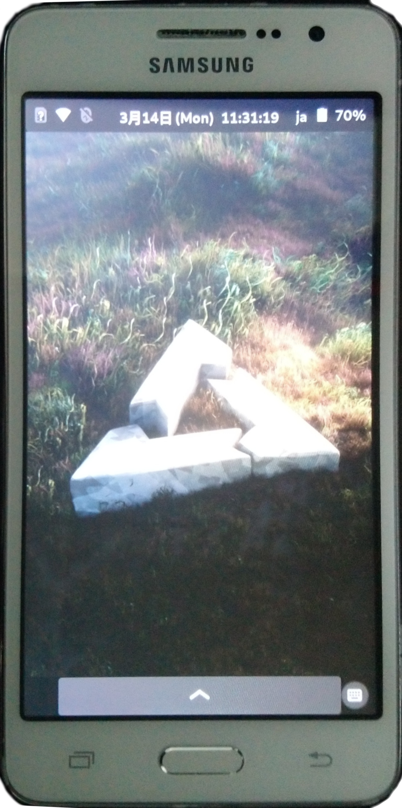

Samsung Galaxy Grand Prime (samsung-gprime)
|
 Samsung Galaxy Grand Prime | |
| Manufacturer | Samsung |
|---|---|
| Name | Galaxy Grand Prime |
| Codename | samsung-gprime, samsung-gprimeltecan, samsung-gprimeltexx, samsung-fortuna3g, samsung-fortunaltezt |
| Released | 2014 |
| Category | testing |
| Original software | Android 4.4 / 5.0.2 / 5.1.1 |
| Hardware | |
| Chipset | Qualcomm MSM8916 Snapdragon 410 |
| CPU | 4x 1.2 Ghz Cortex-A53 |
| GPU | Adreno 306 |
| Display | 960 x 540 LCD |
| Storage | 8 GB |
| Memory | 1 GB / 1.5 GB |
| Architecture | armv7 / aarch64 |
| Unixbench Whet/Dhry score | 904.7 |
{kind=link}
| USB Networking |
Works
|
|---|---|
| Flashing |
Works
|
| Touchscreen |
Works
|
| Display |
Works
|
| WiFi |
Works
|
| FDE |
Works
|
| Mainline |
Works
|
| Battery |
Partial
|
| 3D Acceleration |
Works
|
| Audio |
Works
|
| Bluetooth |
Works
|
| Camera |
Broken
|
| GPS | |
| Mobile data |
Works
|
| SMS |
Works
|
| Calls |
Works
|
| USB OTG |
Partial
|
| NFC |
Works
|
| Accelerometer |
Works
|
|---|---|
| Magnetometer |
Works
|
| Ambient Light |
Unavailable
|
| Proximity |
Broken
|
| Hall Effect |
Unavailable
|
| Ir TX | |
|---|---|
| TrustZone | |
|
This device is based on Snapdragon 410. See the SoC page for common tips, guides and troubleshooting steps |
|
Note: This page is about Samsung Galaxy Grand Prime based on Qualcomm MSM8916. For Marvell PXA1908 variants, see Grand Prime Value Edition (samsung-grandprimevelte) |
Contributors
- WTechNinja
- minecrell (Helped with things here and there)
Users owning this device
- Jojo autoboy
- WonderfulShrineMaidenOfParadise (Notes: armv7)
- WTechNinja
How to enter flash mode
Press Volume Down, Power, and Home all at the same time to boot to Odin mode. After lk2nd is installed, press Volume Down and Power at the same time.
Installation
| Note: Even though MSM8916 is capable of aarch64, the firmware of some variants were never updated with aarch64 support. Therefore, those devices can only boot mainline on armv7 at the moment. |
lk2nd is a secondary bootloader that provides a standard fastboot interface.
- Download lk2nd-msm8916.img from Releases page on Github.
- Boot your phone to bootloader (download) mode by holding Volume Down and Home while powering up.
- Follow lk2nd instructions to install lk2nd. Basically flash it to boot partition (
heimdall flash --BOOT lk2nd-msm8916.img) - Follow Qualcomm_Snapdragon_410/412_(MSM8916)#Installation to install postmarketOS.
| Note: Enter lk2nd fastboot mode by pressing only Volume Down + Power (without Home). Pressing Home additionally will bring you to the Samsung Download mode. |
Touchscreen
Sometimes the touchscreen stops working after idling for hours. To fix it, do:
# modprobe -r zinitix
# modprobe zinitix
Battery
rt5033 charger driver is not available, so the charging is not controlled and there is no charging status reporting.
USB OTG
Another rt5033 charger driver issue. Grand Prime is currently unable to power up a usb device in mainline. Try a hub with external power supply.
Accelerometer
gprime variants use bma, and fortuna variants use k2hh or k303c.
k2hh accelerometer is not so stable for auto screen rotation, which suggests you to use fixed portrait or landscape mode.
Proximity Sensor
No interrupts received from gp2ap002s00f sensor.
Photos
{kind=link}
See also
- Device package (gprimeltecan)
- Device package (gprimeltexx)
- Device package (fortuna3g)
- Device package (fortunaltezt)
- Firmware package (gprimeltecan)
- Firmware package (gprimeltexx)
- Firmware package (fortuna3g)
- Firmware package (fortunaltezt)